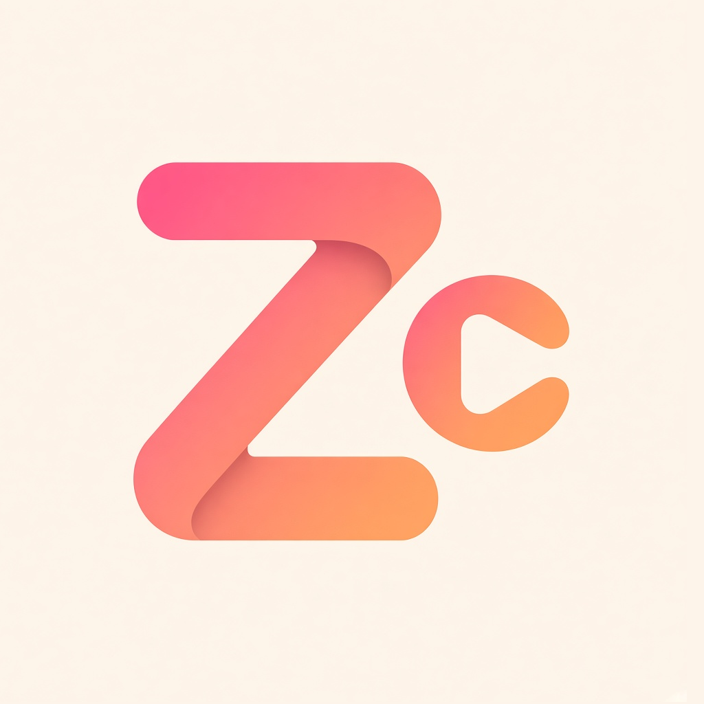
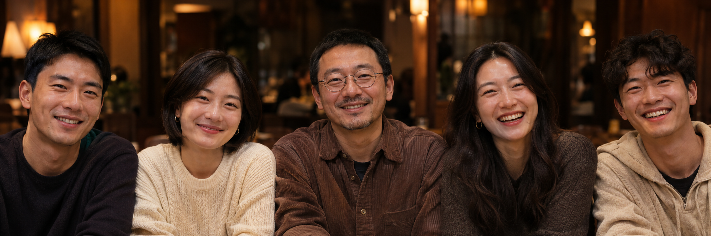

带来真实的生活
上传聚会片段，告诉导演这一期想留住什么。

在场GitHub ↗说好今晚不点外卖
把熟人聚会，变成自己的一期综艺。
你说想法，选喜欢的方向，把值得记住的片段留下来。
公开交互演示 · 无需登录 · 不上传素材、不调用模型
先逛逛制作流程 ↘从一句想法，到一期节目
用虚构的「朋友猜词」示例体验选择。下方是版式示意，不是实际视频或 AI 生成结果。

此图仅演示文字位置与配色；不展示实际剪辑效果。
01 / 先说想法
示例主题：朋友猜词，越认真越好笑。
真实制作中，方向需要结合上传素材决定。
02 / 文字先到位
修改会立即反映在左侧示意图中。
03 / 给重点一点节奏
这里只记录选择，不播放或合成音效。
演示不进行配音。实际制作需确认文案后再合成。
04 / 回看你的选择
当前体验到此结束。真实上传、模型编导和视频导出需运行完整项目，尚未在这个公开页面开放。
你做主创，工具做执行
上传聚会片段，告诉导演这一期想留住什么。
结合素材提出故事与包装方案，再通过预览调整。
视频由后端完成合成，确认后可导出。本页仅展示交互。